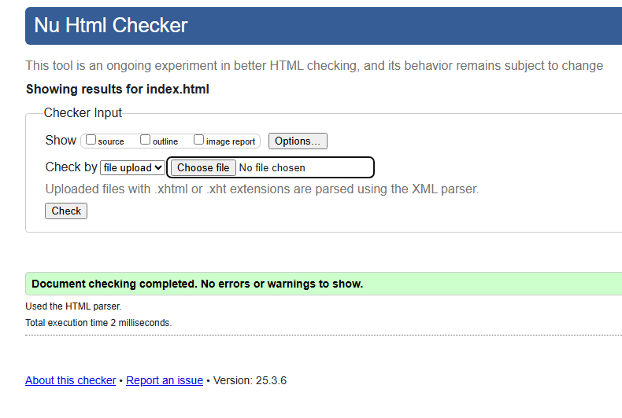
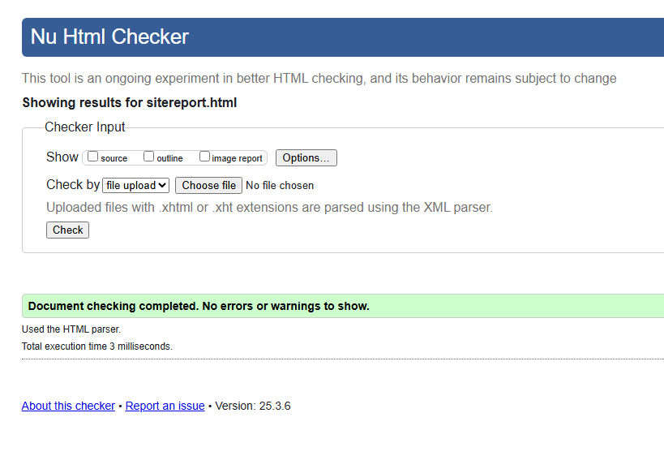
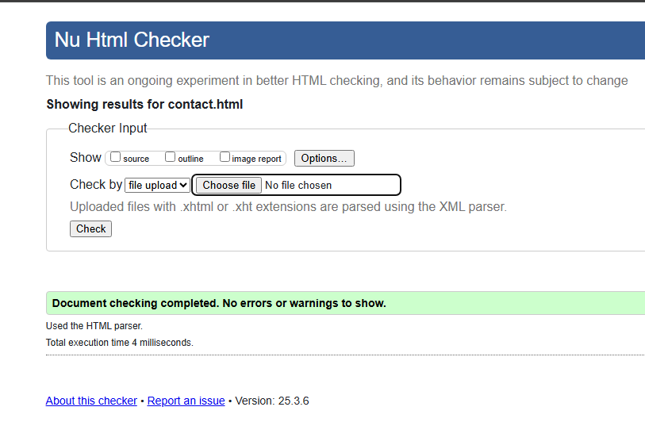
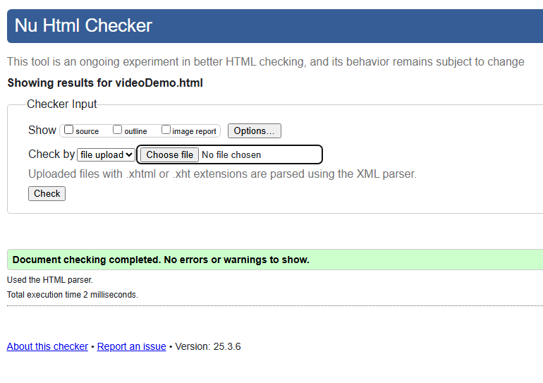
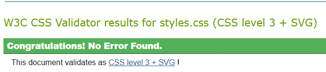

My Development Journey
This website was created as part of my web development assignment, The experience has been challenging but rewarding. I had ups and down when creating it but I managed to get through and learn alot while doing so. I focused on building a responsive, simplistic design that reflects my passion for gaming and coding.
I went through multiple videos and lectures on aiming to completely master web devlopment and I can now confidently say I can build a good responsive website from scratch. I also took inspiration on the first page from a video I saw on youtube by procoder, I really like how he had a typing-text which explained who he is in one line. For my debugging process, I had encountered many issues with my code, I was seeing errors I had never seen before. I had used W3Schools as a guideline to help with any error codes I got when checking my work. That website helped me with alot of problems and questions I had for myself.
The key moments I went through in order to build what I built today
- Understanding HTML structure and semantic tags.
- Using CSS to create a responsive design.
- Incorporating images, videos, and interactive elements.
- Debugging and validating my code
Design Choices
For the design process I felt as If the world as we know it today is becoming more minimalistic and has a modern look which is what I went for. I went on coolors.co and picked a trending color palette which was loved by a lot and came out with the colors, Hit Gray, Ghost,and Pale Sky. I chose a dark theme to align with my gaming interests, using bold fonts and bright highlights to make content stand out. I was inspired by modern gaming UI designs.
Validation Reports
    Watch my video demo here